Footings
Footings are generally reinforced concrete pads that rest on undistrurbed or compacted soil. They are what the foundation walls and structure are built on. In most cases we assume that soil can bear 1,500 pounds per square foot. This assumes we're building on the poorest soils in our area of Southeastern Michigan. There are soils with better bearing capacity, and many regional soils that present their own complications. So a structure needing 6,000 pounds of bearing capacity would need a footing that is 4 square feet.
Generally an architect, draftsperson, or engineer will tell the builder how large to make the footings.
Overview
Footings must be installed first before constructing the rest of the foundation. They are almost always concrete cast in place and bear direction on undisturbed or compacted soil, so their size is important to spread the weight of the building above. You cannot build on top of organic material because it can rot and cause your footing to settle after construction. Similarly they must be the correct size and reinforced to support the load they are intended for. There are many types of footings used commonly in residential construction
Prerequisites
Before you can begin working on footings, the site must be excavated, flat, and compacted. The soil cannot be frozen or soaking wet. It must be free of lose or disturbed soil and any organic matter like sticks, leaves or stumps.
Materials or Tools Needed
Materials and tools will depend on the type of footing you are building, but you'll almost always need:
- Shovels
- Post Hole Diggers
- Rakes
- Compactors
- Lumber, forms, or sonotubes
- Stakes
- String
- Levels or Lasers
- Tape measure
- Rebar, wire mesh
- Tie wire
- Bolt cutters, rebar cutters, or angle grinders
- Pipe for weeps
Process
- Call Miss Dig or your local utility locating service
- This note is important if you did not excavate because you are using diamond pier or helical piers.
- Establish your elevation
- This is often done for an addition by finding the height of the finished floor inside that you want to match up to and then working down. Each course of block is usually 8" tall so you may work down by adding the thickness of the subfloor, joists, plates, block wall, and then footing.
- Establish the outside dimension of the footing
- String lines, or shoot lasers and then stake and form. You want the foundation to land in the middle of the footing, but this doesn't need to be exact. Some types of footings, like piers that stick out of the ground and carry a beam must be exact because they are visible, and any error will be aesthetically problematic - although not necessarily a structural problem.
- Install drains or weeps
- Drains allow water to pass from foundation drains into an interior drainage system like a sump pump, or better drain the interior out to daylight downslope of the home
- This is the time to install a sump pump crock so you can connect the drains
- Once you've dug and formed the footings you want to install reinforcement
- Tie rebar as specified. Dowel into existing foundations and footings as needed. The rebar must be in place during the footing inspection. It can usually be left in the formwork laying on grade with the intention of pulling it up into the concrete as you pour, but some inspectors will require that you place rebar on chairs to hold it up at the correct height.
- Get a footing inspection
- The inspector will look for flat, level, compacted grade at the bottom of the footing. The correct size, and reinforcement as specified in the plans. For piers or post holes they will make sure they are deep enough, flat at the bottom, and the correct diameter. Trenches must be cleaned out. Diamond piers don't require an inspection before installation because the pins serve as "inspection ports" (but consult your inspector to confirm). Helical piers don't require inspection because the engineering and installation report serve this purpose but consult your inspector to be sure.
- Pour concrete in the forms only after you've passed your inspection
- Use the correct concrete mix and if you schedule a pump truck make sure to confirm the concrete mix is something they can pump. They may ask for a wetter mix or a pea stone aggregate.
- Trowel the top of the footings flat and level, or as specified.
- Remove formwork when possible after pouring
- You may not leave wooden formwork in the ground to be buried
Inspections
Most jurisdictions have a footing inspection which must be completed after the footing as been dug, formed, and with reinforcement and drains in place. Some footings like piers or post holes can be inspected once dug if there is no reinforcement or drainage required. Others like diamond piers and helical piers can be inspected later or are documented with paperwork which satisfies this requirement, but the building department will want to confirm they are installed properly.
Common Issues and How to Avoid Them
Make sure the ground is level, flat, and compacted before you start forming footings. Make sure you have dug enough to give plenty of room to work, and excavated safely so the dig walls are not going to collapse if you get bad weather. Make sure that trenches and holes are dug the proper depth the first time when you have machinery on site, and then covered with plywood to keep them in tact while you finish or wait for an inspection. Arrive on site before the inspector to double check your work.
Types of Footing
Piers and Post Hole Footings
Piers and post hole footings are commonly used for structures like decks, porches, and 3-season rooms. They are usually dug by hand using shovels and post hole diggers or with a machine using an auger attachment. They need to be dug to frost depth for your area. Where I work, that is 42" below grade. Sometimes these footings are cast concrete at the bottom of the hole, and sometimes they are cast up to grade or even formed and cast to a height above grade.
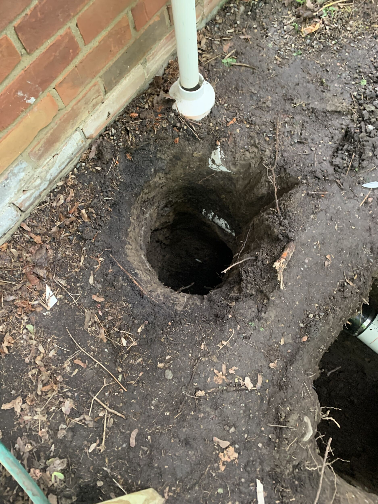
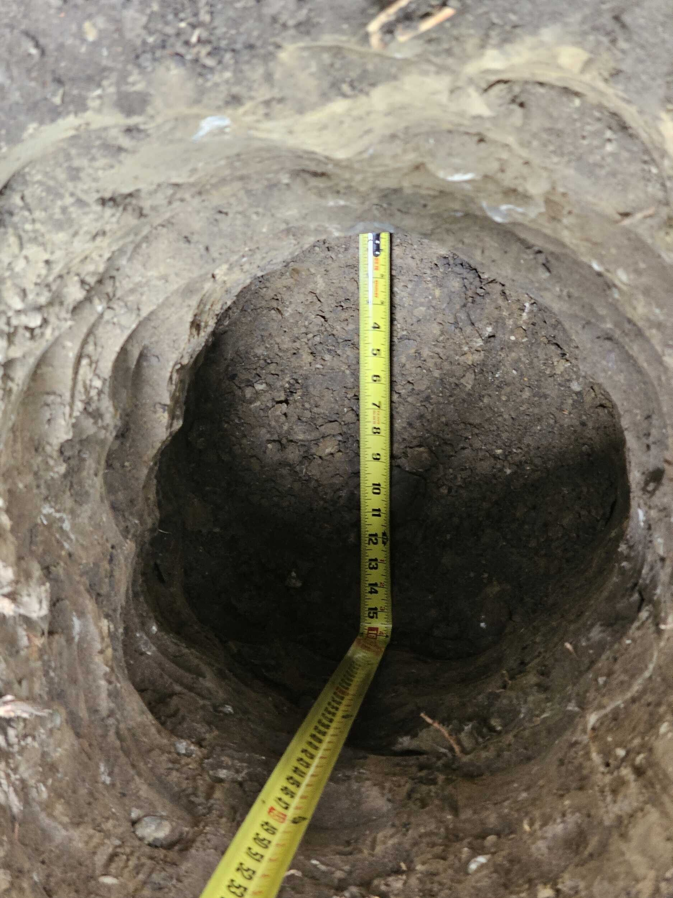
Pin Style Footings (Diamond Piers)
These are pre-cast concrete footings that are held at the surface with galvanized steel pins that are driven in. This type of footing should come with engineering documentation that specifies the loads that they are rated to carry. These can usually be buried just below grade so that you don't see them once installed. They can be unsightly when installed at grade.
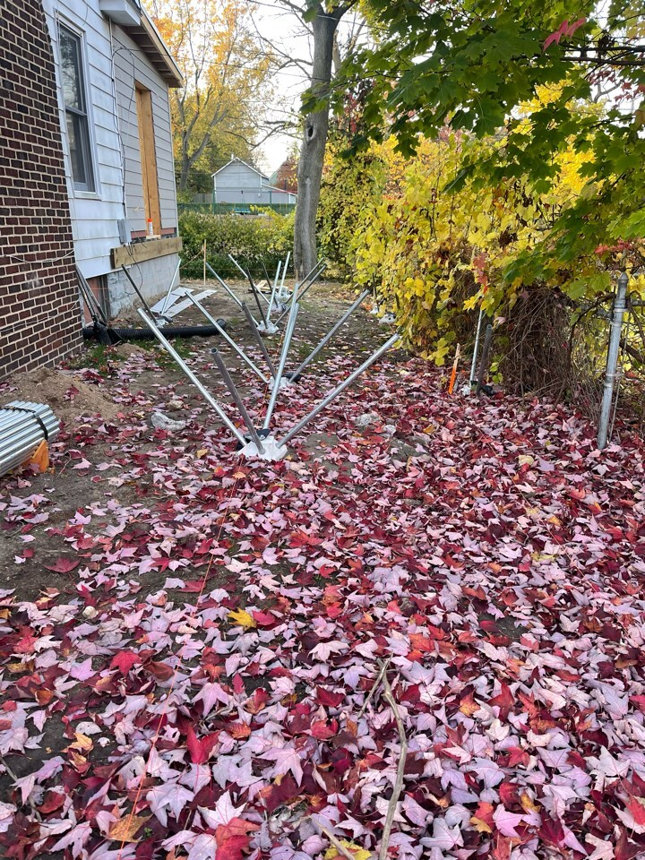
Helical Piers
Helical piers are large screws driven into the ground with a pneumatic drill, most often attached to a dingo or skid steer. The piers come in different sizes and ratings depending on your needs and will reach their nameplate rating once installed to a specified torque rating. For instance a pier may be designed to carry 10,000 pounds of load once it has been driven into the ground to a force of 1,500 ft/lbs of torque. The installer is usually the vendor for the material, and the manufacturer will provide the engineering for you. You will be left with a model number for the screws and a photo or report of the torque gauge on the machine while installing - this is important because you can correlate that model to the load rating at the torque they were installed.
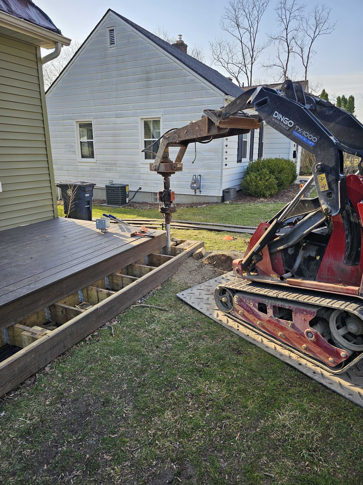
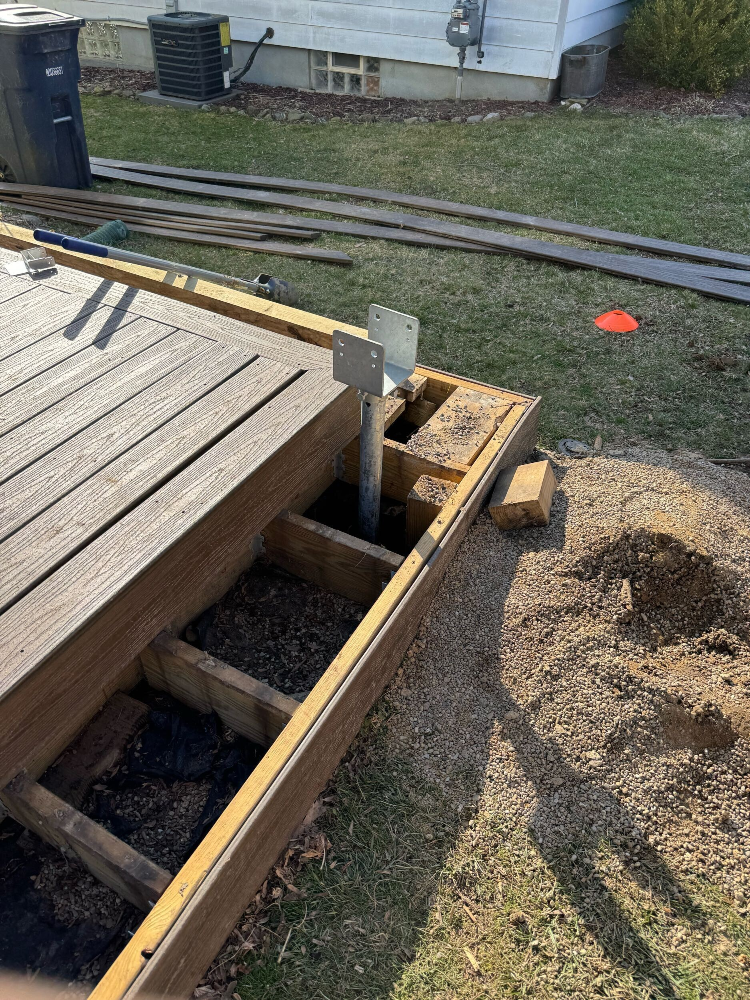
Point Load Footings
A point load footing is usually installed somewhere in the middle of a building and they are designed to carry a specific load from above, like a column supporting a header or a roof load from above. The architect or engineer adds up the weight of the load and designs a footing large enough and strong enough to safely carry the load. These footings are usually specified with a length x width and thickness AND a reinforcement schedule. For instance 24"x24"x10" thick with 4 x #4 rebar rods.
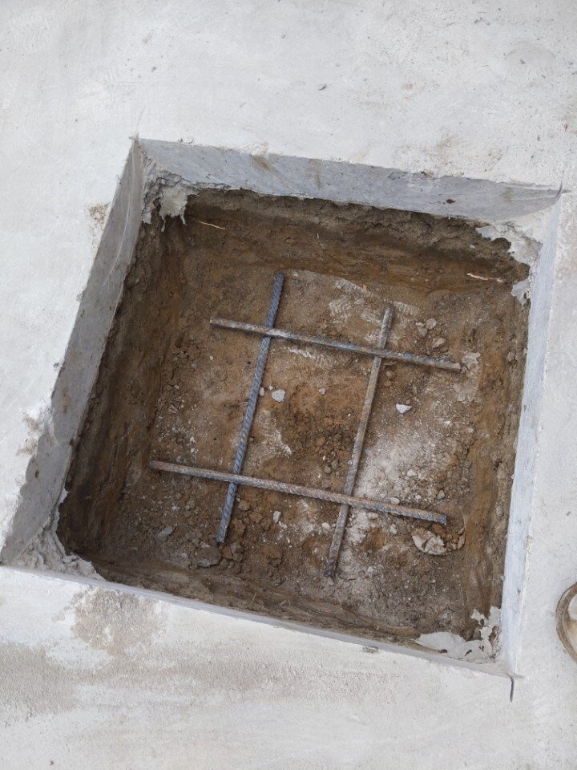
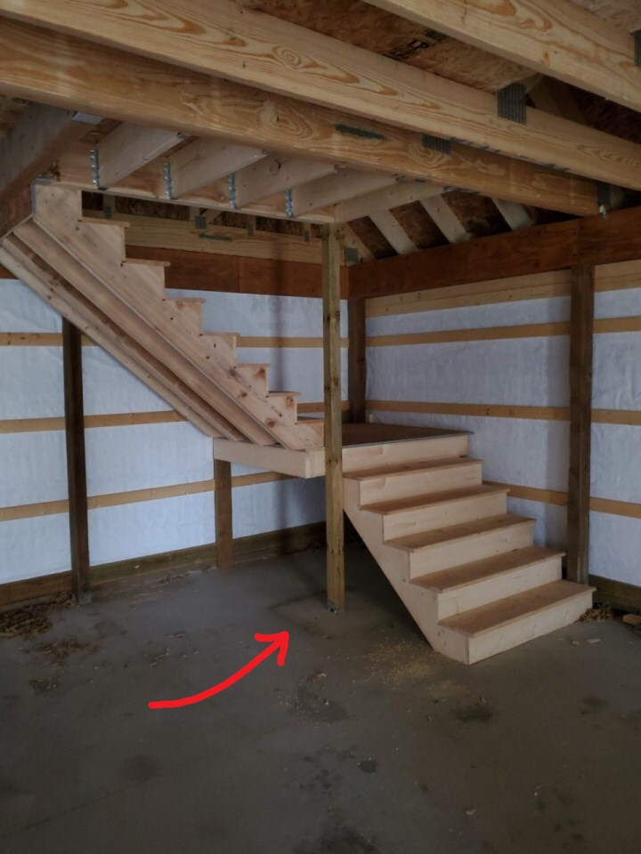
Trench Footings
Trench footings are just trenches dug in the ground and then filled with concrete. They are often used for slab on grade construction, and in cold climate areas for garages or porches. The architect will specify a width and depth. For instance 12" wide x 42" deep. The advantage to a trench footing is your excavator can be outfitted with a 12" wide bucket and digging the footing around the perimeter of the building is quick and easy. The downside is they do not offer any ability to waterproof the outside of the footing, which is why you will not see this type of footing used for a crawl space or basement.
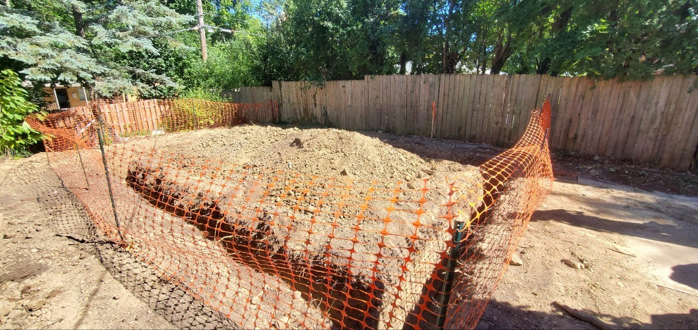
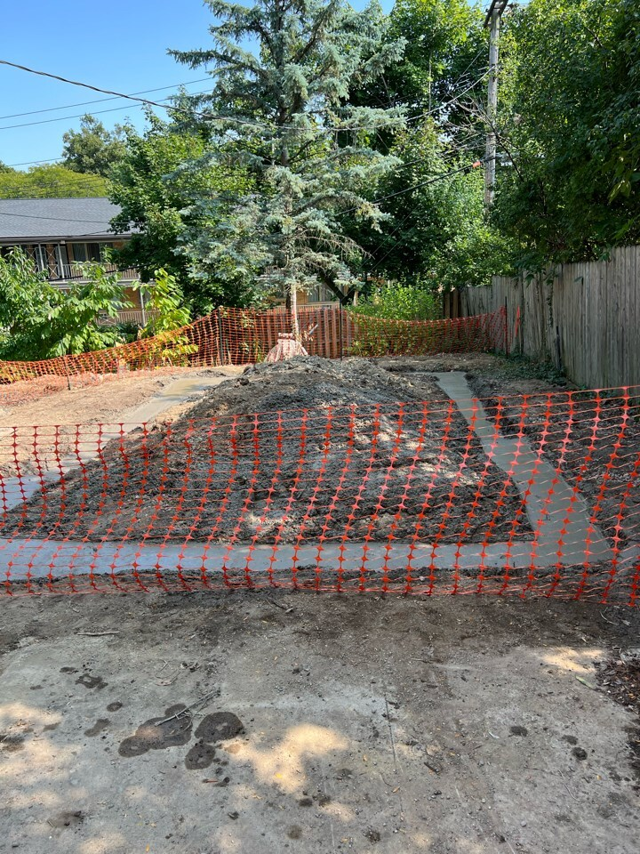
Spread or Formed Footing
A spread footing is the most common type of footing in residential construction. They are used on many crawl space or full basement projects and are built by forming a footing using lumber or specialty products. The architect or engineer will specify a width, height, and reinforcement schedule. Your excavator will dig to the appropriate depth and overdig enough for the foundation crew to work. Formwork is placed in the correct location and braced to pour footings. Later in the project, you will backfill around the footings to re-bury them.
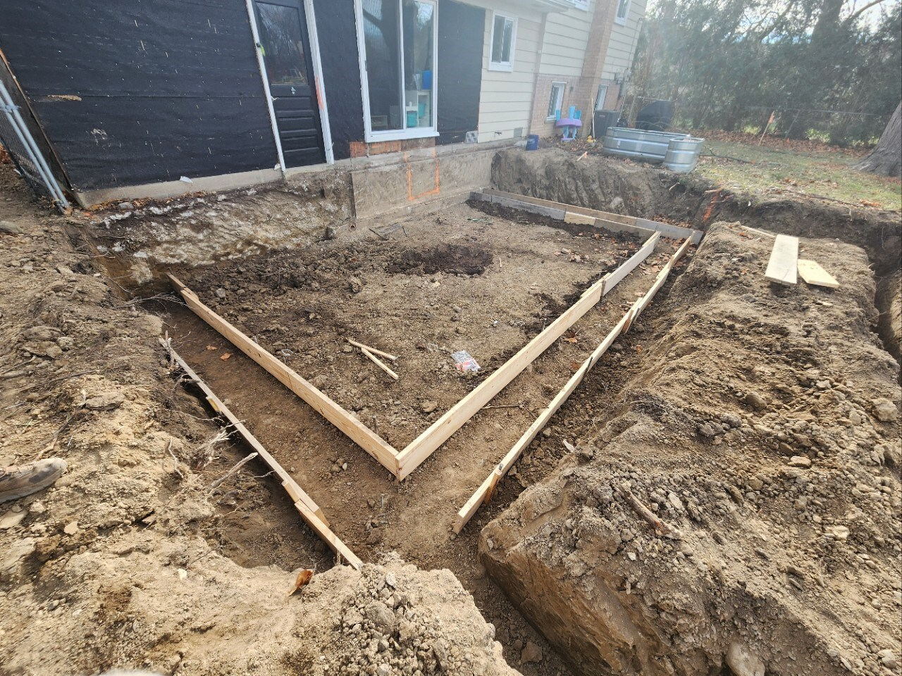
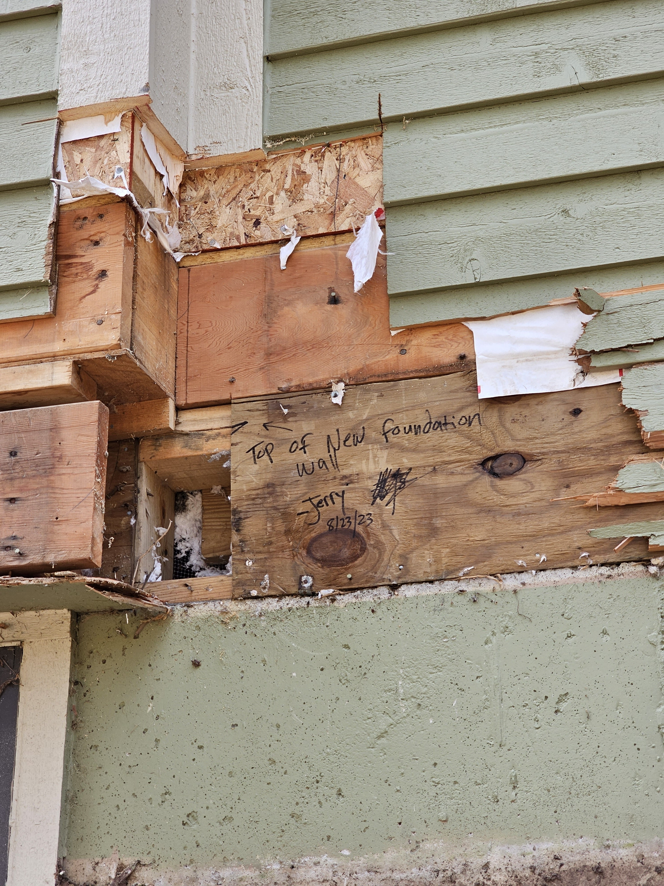
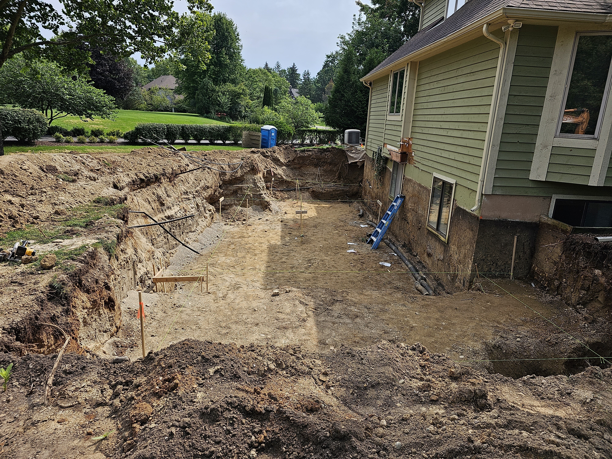
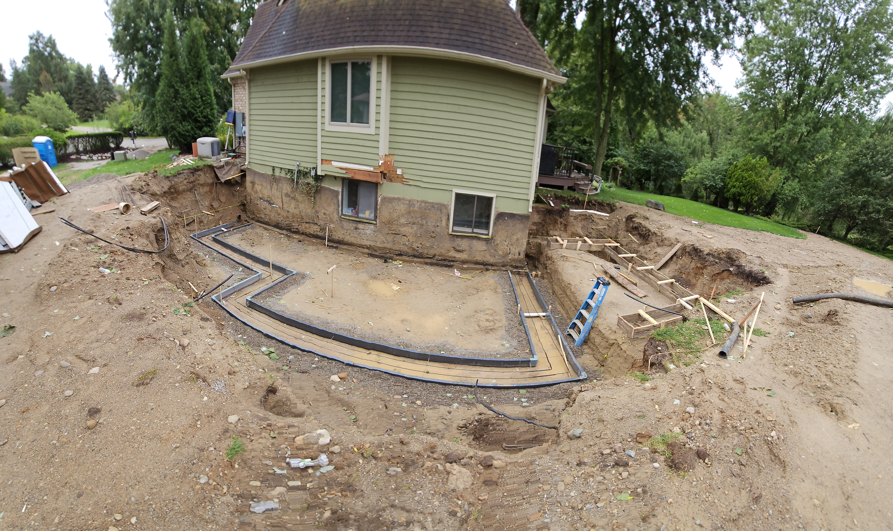
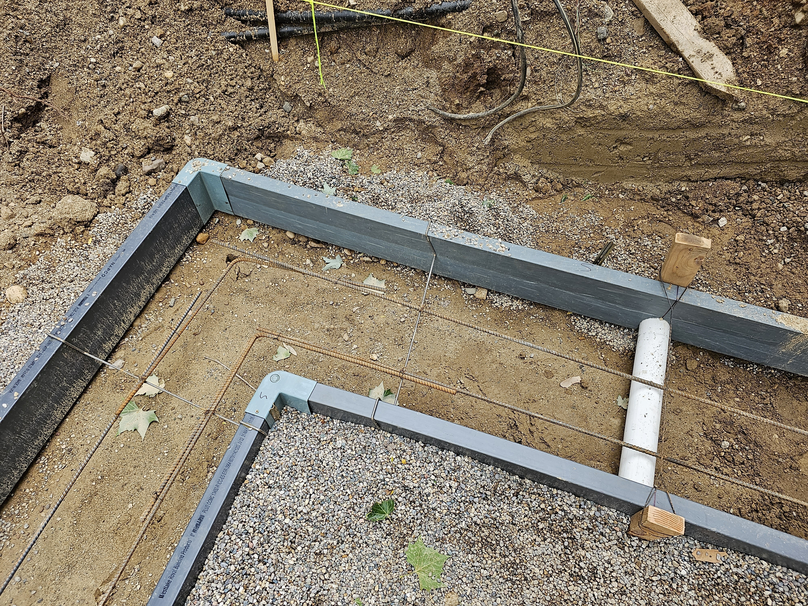
Crushed Stone Footings
Crushed stone footings are used under precast concrete foundation walls in place of a poured concrete footing. A level bed of clean, compacted stone is installed to a minimum width and depth based on soil bearing capacity and wall loading, with stone compacted in lifts.
Resources
Last revised: 11/29/2025